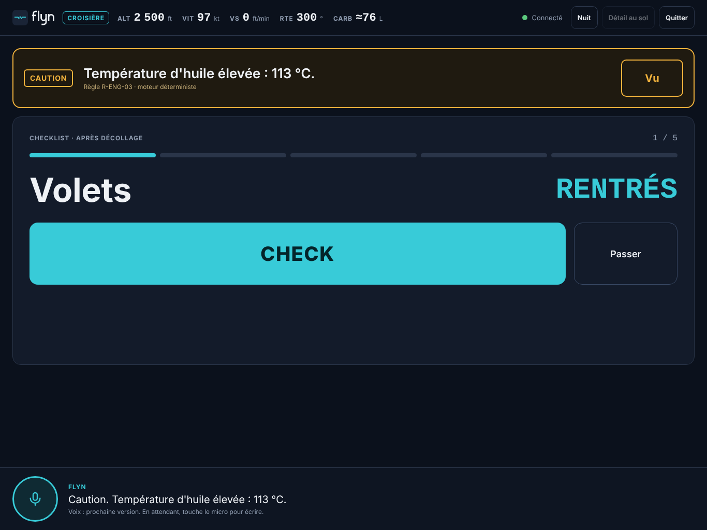
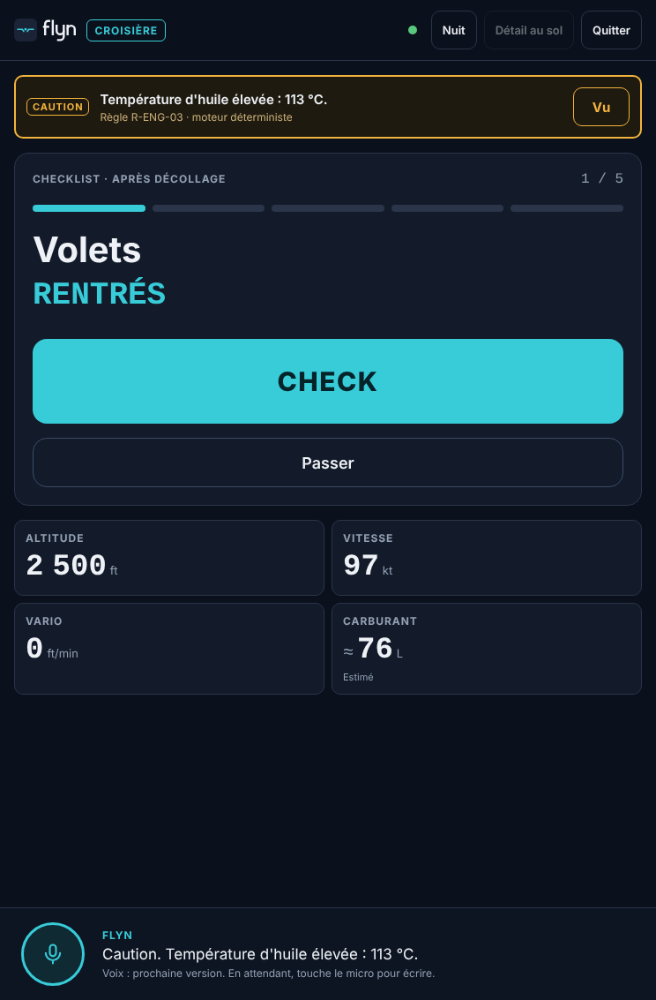
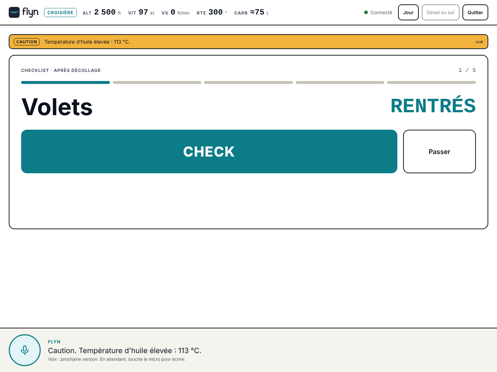

Flyn est un copilote IA consultatif pour l'aviation légère. Il déroule vos checklists à la voix, surveille les écarts, garde vos clairances en mémoire et cite toujours ses sources. Il ne pilote jamais.
Prototype expérimental, testé sur simulateur, non certifié pour un usage opérationnel.
01 · La barre d'horizon
L'état de Flyn, d'un coup d'œil.
En façade, une barre lumineuse reprend le symbole de la maquette d'avion de l'horizon artificiel. Pas d'écran à lire : une couleur suffit.
VeilleÉcoute ou paroleCaution active
02 · Un seul bouton
Parler. Le reste se fait à la voix.
Un bouton capacitif sur le dessus, cerclé de lumière. Checklists, questions, rappel de clairance : vous parlez, Flyn répond dans votre casque.
03 · Rien à brancher sur l'avion
Branché sur votre casque, pas sur l'avion.
Flyn One embarque ses propres capteurs et ne se connecte à aucune commande de vol. Lecture seule, toujours.
1USB-C : alimentation depuis la prise de l'avion
2USB-C : tablette filaire et mises à jour
3Jack : casque ou intercom
4Antenne GNSS / ADS-B
5Interrupteur micro coupé
04 · Flyn PTT
Un bouton sur le manche.
Sans fil, clipsé sur le manche et distinct de l'alternat radio : vous parlez à Flyn sans lâcher les commandes, sans confusion avec la fréquence.
Ce que fait Flyn
Un deuxième regard calme dans le cockpit.
Quand on vole seul, il faut piloter, naviguer et communiquer en même temps. Flyn prend en charge ce qui se rappelle et se vérifie, pour vous laisser ce qui se décide.
Checklists vocales
Flyn lance la bonne checklist au bon moment et lit chaque item. Vous dites « check ». Rien n'est jamais coché à votre place.
VoletsRENTRÉS
Pompe électriqueOFF
Phare d'atterrissageOFF
Surveillance des écarts
Un moteur de règles déterministe et traçable signale ce qui sort des limites.
CAUTIONAltitude autorisée dépassée
Rappel des clairances
La dernière clairance transcrite et affichée, pour lever un doute sans faire répéter.
Documentation sourcée
Une question sur une procédure : réponse tirée de votre manuel de vol.
POH§ sectionp. pagerév. date
Préparé au sol, hors ligne en vol
Météo, NOTAM, carburant et navigation chargés avant le départ. En vol, aucune connexion n'est nécessaire.
Débriefing
Phases, écarts et alertes horodatés après le vol. Utile à l'élève comme à l'instructeur.
L'app Flyn
Une seule chose à la fois.
Sur la tablette, Flyn affiche l'alerte du moment et l'item de checklist en cours, en grand. Le reste attend le sol.


Captures du prototype de l'app, connecté à un vol simulé.
Mode Focus
L'alerte du moment, l'item en cours, un bouton Check de la taille d'une main. Lisible d'un coup d'œil, même avec des vibrations.
Paysage ou genouillère
Sur iPad au tableau de bord ou sur iPad mini sanglé sur la cuisse, l'écran s'adapte.
Détail au sol
La vue complète (valeurs, phases, historique) est réservée au sol, pour la préparation et le débriefing.
Thème Jour
Lisible en plein soleil.
Un écran sombre devient illisible sous la verrière. Le thème Jour passe en contraste maximal : fond blanc, traits épais, alertes en aplat.

Conçu pour la sécurité
Une IA qui sait rester à sa place.
En aviation, une assistance n'a de valeur que si on peut lui faire confiance. Ces principes sont dans l'architecture, pas dans un argumentaire.
01
Consultatif, par conception
Aucune liaison vers les commandes de vol ni le pilote automatique. Le pilote décide, toujours.
02
Deux cerveaux séparés
Les alertes viennent d'un moteur de règles déterministe. L'IA conversationnelle ne fait que des suggestions, étiquetées comme telles.
03
Toujours sourcé
Chaque réponse documentaire affiche sa source, sa version et sa page. Pas de source, pas de réponse.
04
Silence par défaut
Flyn parle quand c'est utile. Moins de bruit dans le casque, plus d'attention pour le pilotage.
Pour qui
D'abord l'aviation légère.
Écoles et aéroclubs
Un assistant de briefing et de débriefing pour vos élèves, en simulateur puis en vol.
Instructeurs
Des débriefings factuels et horodatés, pour cibler ce qui compte.
Élèves pilotes
Les bons réflexes de checklist et de phraséologie, répétés sans pression.
Pilotes privés
Un deuxième regard quand vous volez seul.
Construit en public
Où en est Flyn.
Chaque étape est documentée : ce qui marche, ce qui casse, ce qu'on apprend. Suivez le projet sur LinkedIn.
Fait
Flyn Core et app connectés
Phases de vol, checklists et alertes déterministes, testés sur vol simulé.
En cours
La voix
Reconnaissance et synthèse vocales, entièrement locales.
Prévu
Documentation sourcée
Réponses tirées du manuel de vol, avec page et révision.
Prévu
Tests en école
Sur simulateur : latence, erreurs, charge de travail.
Plus tard
Boîtier Flyn One
Prototype matériel, puis expérimentation encadrée.
Programme de tests
Testez Flyn sur simulateur.
On cherche des pilotes, des élèves, des instructeurs et des écoles pour tester le prototype et nous dire ce qui manque vraiment dans le cockpit. 20 minutes d'échange suffisent pour commencer.
Le fondateur
Steven Jansen
Ingénieur aéronautique et spatial (IPSA), théorie ATPL, en Master IA et Big Data. Flyn est né de son mémoire de recherche sur un copilote IA indépendant de l'avionique.